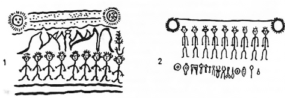

Türkler genel olarak köklerini Kurt gibi kudretli hayvanlara bağlamışlardır. Şüphesiz ki başlangıçta Demircilik de onlar için kutsal bir iş ve meşgale idi. Biliyoruz ki, Göktürk Devleti'ni kuran Bumin ve İstemi Kağan'ların kendi kabilelerinin sanatları demircilik idi. Aşağı yukarı bütün Orta Asya’yı ellerinin altında tutan Juan-Juan (Avar?) İmparatorluğunun silâhlarını bunlar yapıyorlardı. Fakat Göktürklerin demircilikle ilgili ne gibi törenler yaptıkları ve demirciliğin Göktürk dininde ve an'anesinde nasıl bir yer aldığı hakkında bir bilgimiz yoktur. Kaynaklarda bulunmamasına rağmen Orta Asya halklarında bu gün bile yaşayan bazı inanışlar bu konuda az da olsa bize bir ışık verebilecek durumdadırlar.
Moğollarda ve Moğolların kuzey bir kolu sayılan Buryat'larda demircilik sanatı yenidir. Demirciliğin, göç eden bir kavim tarafından kendilerine öğretildiği, Buryat efsanelerinde de söylenmektedir. Buryat'ların demir madeni ve demircilik hakkındaki inanışları çok iptidaîdir. Onlara göre demirci, bir sihirbazdır. Hâlbuki eski Yunanistan'da demircilik kutsal bir sanat olarak kabul edilmiştir. Demirciliğe verilen bu kutsallık, Moğollarda olduğu gibi etrafa sıçrayan ve yakıcı kıvılcımlardan dolayı değil; insanoğlunun parlak zekâsı ve yaratıcılığının bir timsali olduğu için verilmiştir. Bu sebeple Jüpiter ve Hera'nın oğlu Vulkan (Vulcan), bütün sanatkârların taptıkları ve yaratıcılıkları için yardım istedikleri bir Tanrıdır. Demircilik artık toplumun vazgeçilemez bir parçası olmuştur. İnsanoğlu, hayatın her basamağında demirle beraberdir ve demirle yaşar. Demir artık onun için ekmek ve su gibi gerekli bir şeydir. Demircinin de artık, ev yapan bir mimar veya bir kumaşçıdan farkı yoktur. Artık o, bir sihir değil; bir gerçektir. Demirciye sihirbaz olarak saygıya lüzum yoktur. Bu madeni insanlara veren ve onun nasıl işleneceğini gösteren Tanrı ve Tanrılar toplumu her şeyin üstündedir.
Göktürklerde de durum, eski Yunanlılarınkinden farklı değildi. Demircilik, onların günlük hayatlarının içinde idi. Bütün kabilenin, işi, gücü ve sanatı demircilikti. Kim kimden korksundu; kim kime hürmet etsindi. Elbet de onlar da eski Yunanlılar gibi, demiri kendilerine verene ve bu madeni işlemek için kendilerini üstün meziyetlerle donatan Tanrılarına minnettar idiler.
Çingiz-Han'ın ölümü sırasında Moğol başkentine, Güney Çin'deki Sung Sülâlesi tarafından gönderilen General Men Hung'un yazdığı, Meng-Ta Pei-lu adlı meşhur bir seyahatname vardır. General Men Hung, o çağın bilgi ve tecrübesi ile tanınmış, en ileri gelen askerlerinden biri idi. Çingiz-Han kuvvetlendikçe, istilâ sırasının kendilerine geleceğini anlayan Sung Sülâlesi, Moğolların gerçek durumunu öğrenmek ve bir nevi casusluk vazifesi ile, bu bilgili generali elçi olarak göndermişti, işte bu meşhur General, Moğolların Çingiz-Han'dan önce madenleri işleyemediklerini ve ok uçlarını bile kemikten yaptıklarını açık olarak kendi eserinde yazmıştır. Ayrıca Moğollara demir silâhların Uygurlardan geldiğini de sırası gelince bir yerde ilâve etmiştir. Bu sebeple eski Yunanlılarda olduğu gibi inkişaf etmiş ve köklü bir demir ve demircilik kültünün varlığına yer verilemezdi.
Yukarıda gördüğümüz gibi, Moğollar yılbaşı gecelerinde bir demir parçasını ocakta kızdırırlar ve bu demiri döğerek uzatırlardı. Bu demiri uzatma an'anesi Türkler de de vardır. Eski bir Türk atasözünde, şöyle deniyor116: "Yıgaç uzun kes, temür kısga kes" yani "Ağacı uzun kes, demiri kısa kes." Çünkü ağacın uzama veya kısalma ihtimali yoktur. Fakat demir dövülmek sureti ile icabında uzatılabilir.
Türkler demire, genel olarak kök-Temür, yani "gök demir" derlerdi. Türklerde de demir kutsal idi ve kılıçla da and içilirdi. Bu konuda bir fikir verebilmek için, Kaşgarlı Mahmud'un sözlüğünden şu açıklamaları alalım117:
(Kök temür kerü turmas) atasözünün manası, (gök demir boş durmaz) demektir (Dokunduğu her şeyi yaralar), anlamına gelir. Bu atasözünün ifade ettiği başka bir anlam daha vardır: Kırgız, Yabaku, Kıpçak gibi daha başka boyların halkı, aralarında bir şey üzerine and içtikleri veya sözleştikleri zaman, demire saygı göstermek için, kılıcı kınlarından çıkarırlar ve yanlamasına olarak önlerine korlardı. Bundan sonra da kılıç üzerine şöyle yemin ederlerdi : (Bu kök kirsün, kızıl çıksun). Derlerdi. Bunun manası şu demektir : (Eğer sen sözünde durmazsan, bu gök renkteki kılıç, senin kanına bulanarak kızıl çıksın ve senden öcünü alsın !) Çünkü Türkler demiri ulu ve kutsal sayarlardı."
Yine aynı kaynakta, demir tozu118 demir eğelemek119, demir eritilecek ve süzülecek yerler120 ve çelik nevileri121 hakkında birçok bilgiler bulunur.

Şekil 15: İt Buryat ongonu: Gökte sucu kızlı ve fundalı ay aile güneş ana: ortada göğe yükselen dağlar, kutsal kayın, Buka Noyon'un 9 dev oğlu ile altında, sihirbaz Demirci’lere ait âletler görülür (İvanof'tan).
Yakut Türklerinde de demircilik, gerek din ve gerekse bir zanaat olarak büyük bir önem taşırdı. Yakutlara göre Kıtay Baksı Toyon, yeraltında yaşayan "Sekiz Yeraltı Tanrıları"nın soyundan gelirdi ve aslen insanlara kötülük getiren bu ruh, "demircilerin koruyucusu" idi. Demirciler, onun şerefine kırmızı bir inek keserlerdi. Bu ineğin kanını, çekiç, örs, kerpeten, körük gibi demircilikle ilgili aletlere sürerler ve ineğin ciğeri ile yüreğini de alarak, demir ocağının içinde iyice kızartırlardı. Sonra da bu kızarmış ciğeri alır ve örste, çekicin altında yok oluncaya kadar döğerlerdi.122 Diğer bir Yakut Şaman duasında da şöyle denilmektedir : " Yakut ulusuna, kudretli demirciler göndererek lütufta bulunan Kıtay-Baksı-Toyon'a saygı göstereceğim. Eğer demirci hastalanırsa, bir inek kesip, kurban olarak ona sunacağım. Kurbanın ciğerleri ile böbreklerini, demircinin ocağına gömeceğim.123" Bu duadan anlaşıldığına göre, burada söylenmek istenen demirci, daha ziyade bir Şaman ve sihirbaz idi. Çünkü Şamanlar da, bir demirci sayılırdı. Yakutlara göre Şaman (Oyun) ile Demirci (Uus), aynı yuvadan gelirlerdi.124
Yakutların en büyük demircilerinden biri, Ağlıs adını taşır. Yakut lehçesinde Ağl, "kutsal koruyucu ve muhafız" anlamına gelirdi. "Aile ocağı", "Kutsal ateş" gibi deyimler de, aynı sözle ifade edilirdi. Yakut Türklerine göre "aile ocağı," sönmemesi gereken "Kutsal bir ateş" idi. Bu ocağı koruyan ayrıca bir ruh da vardı. Ocakta yanan meşe (Mas) ağacı da kutsal bir ağaç sayılırdı.125 Bunlardan da anlaşılıyor ki, demircilik ve demirciler, kutsal ateşle de ilgili idiler ve bundan dolayı da ayrı bir önem kazanıyorlardı. Demircinin önemli aletleri olan, kerpeten, çekiç, örs ve körük gibi alet ve edevat da kutsal sayılırdı. Bunların her birini de ayrı ayrı koruyan, "Koruyucu melekleri ve ruhları" vardı. Yakutlar bu ruhlara İççi, "Efendi, sahip" adlarını verirlerdi. Çok önemli bir noktayı da, burada yazmadan geçemeyeceğiz. Yakutlar, Ruslarla ilgi kurduktan sonra, onlardan demircilikle ilgili birçok aletler almışlardı. Fakat onlar, bu yeni ve yabancı aletlere kutsal bir önem vermemişlerdir. Kutsal demirci aletlerinin hepsi yerli ve eski biçimde yapılan aletlerdi.126
Oğuz-Han, Muz-Tag'ı geçtikten sonra, "duvarı altından, pencereleri gümüşten ve çatısı da demirden" bir ev görmüştü, Evin anahtarı olmadığı için, o evi açıp orada oturması için bir beyine emir vererek ilerlemişti.127 Yakut mitolojisinde de böyle "demirden yapılmış evlere" rastlanır. Bu evleri yaptıran kimseler genel olarak kadınlardır. Evlerini yaptırmak için diyar diyar gezerler ve kendilerine göre bir demirci bulurlardı.128
Manas Destanı ile ilgili bölümümüzde, Manasın kendi demircisine ne kadar önem verdiğini görmüştük. Her akına çıkmadan önce Manas kendi demircisine gider, kılıçlarını biletir, silâhlarını tamir ettirir ve öyle yola çıkardı. Nogay-Han'ı Yoloy'u mağlup ettikten sonra, onun iki kızını esir ederek yurduna getirmişti. Bu Han kızlarından birini, teşekkür ifadesi ile demircisine vermiş ve diğerini de oğluna nikâhlamıştı. Manas, demircisini Darkan, yani Tarkan, saygı deyimi ile çağırırdı.129 Çünkü Tarkan'lık hükümdar tarafından verilmiş çok yüksek bir üstünlük ünvanı idi. Tarkan'lar vergi vermez ve ceza görmezlerdi. Onların bu rütbesi de nesilden nesile devam edip, giderdi. Manas'ın, Nogay Han'ının kızını büyük demircisine hediye olsun diye vermesini Ulu-Hatun Kanıkey töreye uygun bulmamış ve kızı demirciden alarak, kocası Manas'a vermişti.130
Demirci aynı zamanda, insanlara kötülük getiren Albastı ruhunun da en büyük bir düşmanı idi. Prof. Abdulkadir İnan'ın anlattığına göre Kazaklar, loğusa kadınları kötü ruhlardan korumak için, bir demir parçası veya bir çekiç ellerine alarak : "Demirci geldi! Demirci geldi!" Diye bağırırlarmış. Albastı, demirciden korktuğu için, loğusanın yanına yanaşamazmış.131
Buryatların demircilikle ilgili inanışları, Türklerinkine nazaran çok geri ve iptidaidir. Bilindiği üzere Buryatlar, Moğolların eski inanışlarını en az kaybeden bölümlerinden biridir. Onlara göre demirci bir sihirbazdır. Bu sihirbazlığı da, hep ateşle beraber olduğu ve ateşle çalışmasından dolayı ileri gelirdi. Demirci, taşı alır ve onu eritir, demir yapar. Onlara göre böyle zor işleri yapan bir kişi, tabiatın birçok karanlık sırlarını da biliyor, demekti. Bunun için onlar, "demirci, hem akıllı ve hem de korkunç bir kişidir," derler. Buryatlardaki demir ve demircilik inanışları ile ilgili çok önemli bir özet hazırlayan, tanınmış Rus etnografı D. Klements'e göre, demircilik ve demirle ilgili olan inanışlar, Buryat Moğollarına dışarıdan gelmiş olmalı idiler.132 Zaten Buryat efsaneleri de demirciliği, bir zamanlar yakınlarından göçüp giden yabancı bir kavimden öğrendiklerini yazarlar. Buryatlara göre Buryat halkı, demirciliği birdenbire öğrenmişti. Onlarda, Ak-Demirci ve Kara-Demirci olmak üzere iki türlü demirci vardı. Tabii, bunlara paralel olarak da, Ak-Şaman ve Kara-Şaman unvanlarını taşıyan iki nevi Şaman ortaya çıkıyordu. Bu demircilerin her ikisi de, önceleri insanların dostları imişler. Fakat nedense, sonradan insanlara düşman olmuşlar. Ak-Demirci'nin efendisi, insanlara iyilik getiren, Batıdaki Tanrı idi. Kara-Demirci de, kötülük veren Doğudaki Tanrı'ya bağlı imiş. Buryatların ilk demircilerinin adı Boyontoi idi. Onu Tanrı, insanlara hizmet etsin diye gökten yere indirmiş. İki defa yere indiği yer de, Baykal Gölü'nün güney batısındaki Tunka dağı imiş...
Yine Güney Sibirya'da söylenen bir efsaneye göre ise ilk demirci, hayvan postlarına bürünen bir insanmış. Bu, bir mağarada otururmuş ve bu mağara içinde de çok zengin bir demir madeni varmış.133 Görülüyor ki, Moğol efsaneleri Türklerinki gibi realist değildirler. Esasen eski çağlarda demir işledikleri de şüphelidir. Demirciliğin merkezi Yenisey Kırgızları ile Güney Batı Altaylardaki Göktürk bölgeleridir.134
Ergenekon Efsanesi ve Ye'cuc-Me'cuc Seddi: Orta Asya kavimlerinin bir zamanlar yüksek demir dağlar orasında kalıp, sonra da dağları eriterek dışarı çıktıklarını anlatan efsaneleri incelemiştik. Ortadoğu kavimlerinde de buna benzer bazı inançlar vardı. Onlar da böyle yüksek dağları aşan ve demir kapıları devirerek yeryüzüne felâket getiren bir kavmin varlığına inanırlardı. Hemen her kutsal kitapta geçen bu Ye'cuc ve Me'cuc efsanesine ters tarafından bakılınca, Türk ve Moğolların Ergenekon efsanelerini hatırlamamanın imkânı yoktur. Bunlar nihayet, insan muhayyelesinin bazı fantazilerinden başka bir şey değillerdi. Bu dış benzerliklere bakarak büyük sonuçlara varmak, elbette ki, doğru olmayacaktır.
Ön Asyalılarla Avrupalılar Türkleri, herhalde Ye'cuc ve Me'cuc kavimlerinden biri olarak saymışlardı. Fakat Türkler bunu kabul etmemişlerdi. Nitekim Kaşgarlı Mahmud'un kitabında Ye'cuc ve Me'cuc seddi, Çin Seddi olarak gösterilmekte idi.
Fakat Han-Nâme'de durum böyle değildir. Han-nâme'ye göre Özbeklerin yurdu Karnülbakar dağıdır. Bilindiği üzere bu dağ, kutsal kitaplara göre Ye'cuc ve Mecucların oturduğu bir dağ idi. Han-nâme'ye göre Özbekler sık sık bu dağdan çıkarlar ve Ozgan, yani Oğuz-Han'ın nesillerine bile felâket getirirlerdi. Aynı eserde, Özbeklerin yerini garip yaratıklar da alırlardı.
Yahudilik ve Hıristiyan âlemi de, doğudan veya kuzeyden böyle bir kavmin kopup geleceğini ve bundan sonra da kıyametin kopacağına inanmışlardı. Bunun için de Hıristiyan âlemi bu anı, asırlarca beklemiş ve Orta Asya’dan gelen her Türk kavmini, Ye'cuc ve Me'cuc'lar sanmışlardı. Hele Attila Hunlarının akınları, bütün Avrupalılarca Ye'cuc ve Me'cuc kavimlerinin gelişi gibi kabul edilmişti (Attila ve Hunlar, s. 142). Hunlar hakkında söylenmiş, bir Hıristiyan Süryani efsanesini özetleyeceğiz. Bu özeti yaparken de, büyük İskender'in yaptığı akınlar dolayısı ile zikredilen birçok yer ve efsanevî kral adlarını vermemeye çalışacağız. Ümit ediyoruz ki, bu yolla yapacağımız bir özet daha açık ve anlaşılabilir bir hale girecektir.
Bu efsanede de Ergenekon destanında olduğu gibi demircileri de görüyoruz. Asıl önemli olan nokta, bu kavimlerin "Tanrının emri ile sedleri ve demir kapıları devirerek yeryüzüne yayılmış olmaları" inancıdır. Kendisini, Tanrının kırbacı sanan Attila ile daha sonraki Türkler ve Moğollarda da bu inanç vardı. Onlar da kendilerini, kötü yola sapanları cezalandırmak için gönderilmiş "Tanrının ordusu" olarak kabul ediyorlardı. Hunlar hakkındaki efsane şöyledir:
"Hunlar, Kafkas dağlarının tek geçidinde bulunan kapının, kuzey bölgelerinde oturuyorlardı. Büyük İskender, Hunlar güneye iner de, kendi ülkelerinde taş üstünde taş bile bırakmazlar ve yakarlar diye, kuzeye bir akın yapmayı tasarladı. Ordusunu toplayarak, Dicle ve Fırat nehirlerinin kaynaklarını geçen Büyük İskender, Doğu Anadolu'ya ulaştı. Ondan sonra da Muşaş adlı bir dağı geçti. Bu dağın ötesinde de, her tarafı çok yüksek dağlarla çevrili büyük bir ova vardı. Ovaya inen İskender, dağlara bakmış ve hayretler içinde kalmıştı. Etrafında ki bazı tüccarlar, bu bölge hakkında ona bilgi vermişler ve bu dağlara insanoğlunun tırmanmadığını söylemişlerdi. Onlara göre, bu dağların ötesinde Nuh Peygamber'in oğlu Yafes'in soyları otururmuş ve onların da, birçok kralları varmış. Bunları duyan Büyük İskender, dağların ötesindeki kavimlerin bu tarafa geçmemesi ve İnsanoğlunun korunması için, bu dağlara bir kapı yapılmasını emir etmiş. Bunun için de, üç bin demirci ile üç bin bakır ustası çağırtarak, onlara büyük bir kapı yaptırtmış. Bu kapıyı da Daryal geçidine koydurmuş.
"Fakat bu kapının, onları ebediyen durduramayacağını Büyük İskender de biliyormuş. Bunun için de kapının, üzerine şöyle bir kitabe yazdırmış : "Hunlar, bir zaman gelecek ki, bu kapılardan aşıp İran ve Roma ülkelerini ellerine geçireceklerdir. Ama bundan sonra, yine kendi bölgelerine çekileceklerdir. 927 yıl sonra, oturdukları yerlerden çıkıp, yeniden yeryüzüne yayılacaklardır. Bu defa bütün dünya, onların atlarının ayakları altında titreyecektir. Bu kapının yapılışından 950 yıl sonra ise, Hun kralı bu geçitten geçecek ve Tanrının buyruğu ile bütün dünyayı egemenliği altına alacaktır."
"(Başka bir kaynağa göre ise:) Tanrının emri ile Büyük İskender’in yaptırdığı bu kapılar devrilecek ve denizdeki kum taneleri kadar sayısız, gökteki yıldızlar kadar kalabalık bir ordu gelecek ve yeryüzünün her yanını ellerine geçireceklerdir. Bunlar arasında, Hunlarda vardı..."